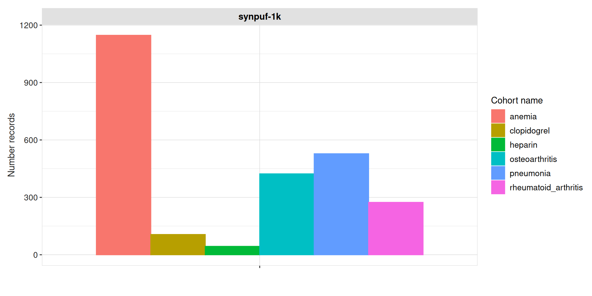
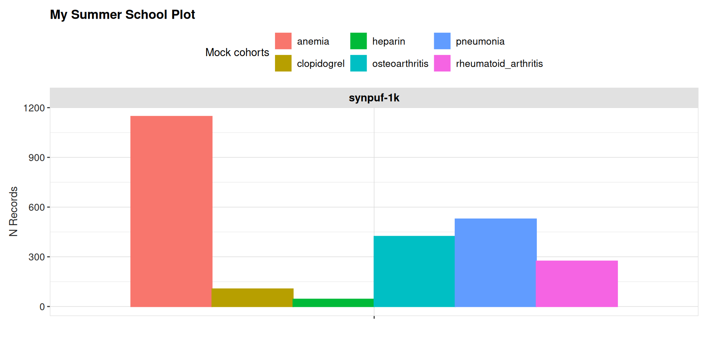
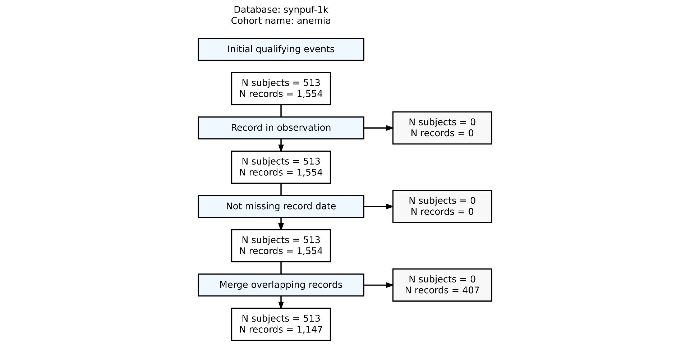
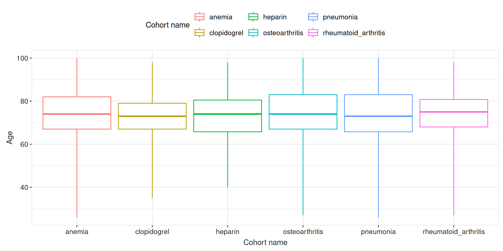
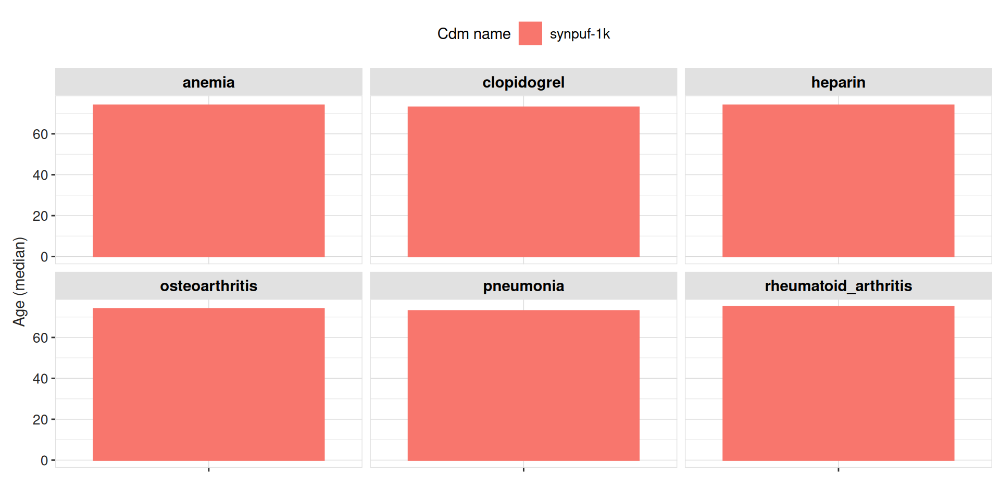
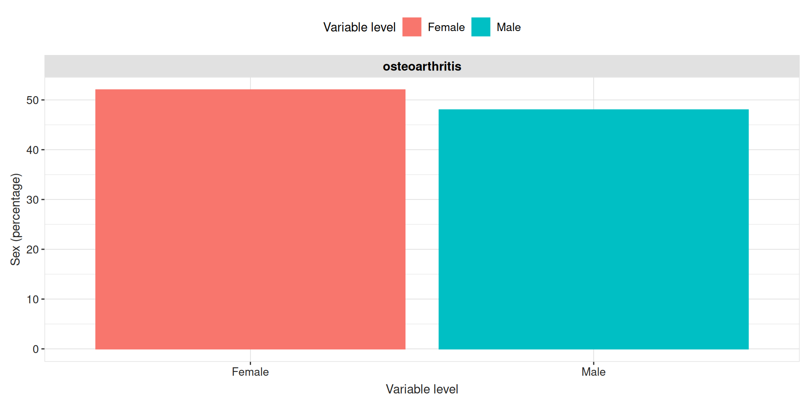
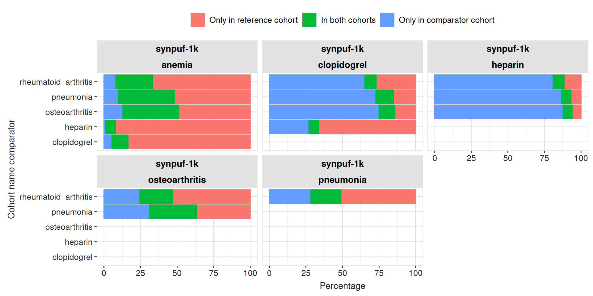
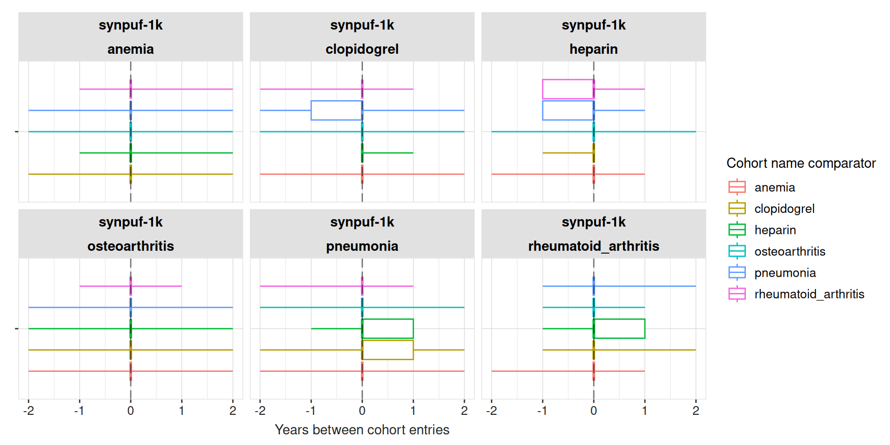
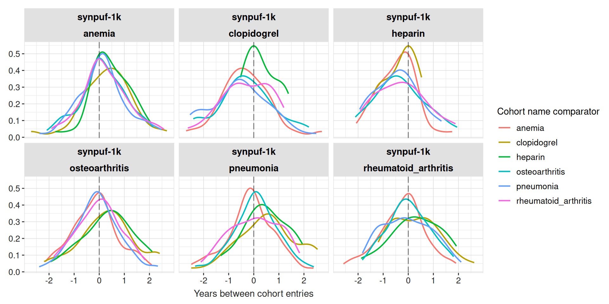

install.packages("CohortCharacteristics")CohortCharacteristics
An R package to characterise cohorts
2026-11-11
CohortCharacteristics
Website
CohortCharacteristics is on CRAN:
You can also install the development version from our GitHub repo:
remotes::install_github("darwin-eu/CohortCharacteristics")The package documentation and vignettes are available on the website: https://darwin-eu.github.io/CohortCharacteristics/
Let’s get started
Let’s create some cohorts that we will use during the presentation:
library(DiagrammeR)
library(DiagrammeRsvg)
library(rsvg)
library(grid)
library(png)
x <- c(list(anemia = 439777,
rheumatoid_arthritis = 80809,
osteoarthritis = 80180,
pneumonia = 255848),
getDrugIngredientCodes(cdm, c("heparin", "clopidogrel"),
nameStyle = "{concept_name}")) |>
newCodelist()
cdm[["my_cohort"]] <- conceptCohort(cdm = cdm,
conceptSet = x,
name = "my_cohort")Workflow
We have three types of functions:
summarise: these functions produce a standardised summary of a cohort. This output is called
<summarised_result>.plot: these functions produce plots from the
<summarised_result>object generated by the summarise functions.table: these functions produce tables from the
<summarised_result>object generated by the summarise functions.
Contents
summariseCohortCount
Use summariseCohortCount() to get counts for your cohort. Pipe your cohort table into the function as shown below.
results <- cdm$my_cohort |>
summariseCohortCount()It returns cohort counts in a summarised_result object.
glimpse(results)Rows: 12
Columns: 13
$ result_id <int> 1, 1, 1, 1, 1, 1, 1, 1, 1, 1, 1, 1
$ cdm_name <chr> "synpuf-1k", "synpuf-1k", "synpuf-1k", "synpuf-1k", "synpuf-1k", "synpuf-1k", "synpuf-1k…
$ group_name <chr> "cohort_name", "cohort_name", "cohort_name", "cohort_name", "cohort_name", "cohort_name"…
$ group_level <chr> "anemia", "anemia", "clopidogrel", "clopidogrel", "heparin", "heparin", "osteoarthritis"…
$ strata_name <chr> "overall", "overall", "overall", "overall", "overall", "overall", "overall", "overall", …
$ strata_level <chr> "overall", "overall", "overall", "overall", "overall", "overall", "overall", "overall", …
$ variable_name <chr> "Number records", "Number subjects", "Number records", "Number subjects", "Number record…
$ variable_level <chr> NA, NA, NA, NA, NA, NA, NA, NA, NA, NA, NA, NA
$ estimate_name <chr> "count", "count", "count", "count", "count", "count", "count", "count", "count", "count"…
$ estimate_type <chr> "integer", "integer", "integer", "integer", "integer", "integer", "integer", "integer", …
$ estimate_value <chr> "1147", "513", "106", "89", "44", "41", "423", "298", "528", "272", "274", "184"
$ additional_name <chr> "overall", "overall", "overall", "overall", "overall", "overall", "overall", "overall", …
$ additional_level <chr> "overall", "overall", "overall", "overall", "overall", "overall", "overall", "overall", …tableCohortCount
To get a tidy table from the <summarised_result> object.
tableCohortCount(result = results)| CDM name | Variable name | Estimate name |
Cohort name
|
|||||
|---|---|---|---|---|---|---|---|---|
| anemia | clopidogrel | heparin | osteoarthritis | pneumonia | rheumatoid_arthritis | |||
| synpuf-1k | Number records | N | 1,147 | 106 | 44 | 423 | 528 | 274 |
| Number subjects | N | 513 | 89 | 41 | 298 | 272 | 184 | |
plotCohortCount
Use plotCohortCount() to visualise cohort counts as a ggplot2 object.
results |>
filter(variable_name == "Number records") |>
plotCohortCount(colour = "cohort_name")
plot functions in ggplot
The plotting functions return ggplot2 objects that you can edit later if you are familiar with the ggplot2 interface. For example, here we change the legend and the axis titles:
p <- results |>
filter(variable_name == "Number records") |>
plotCohortCount(colour = "cohort_name")
p +
labs(y = "N Records", fill = "Mock cohorts", colour = "Mock cohorts", title = "My Summer School Plot") +
theme(legend.position = "top")
summariseCohortAttrition
To summarise cohort attrition, pipe your cohort table into the function as shown below.
results <- cdm$my_cohort |>
summariseCohortAttrition()It returns cohort attrition in a summarised_result object.
glimpse(results)Rows: 96
Columns: 13
$ result_id <int> 1, 1, 1, 1, 1, 1, 1, 1, 1, 1, 1, 1, 1, 1, 1, 1, 2, 2, 2, 2, 2, 2, 2, 2, 2, 2, 2, 2, 2, 2…
$ cdm_name <chr> "synpuf-1k", "synpuf-1k", "synpuf-1k", "synpuf-1k", "synpuf-1k", "synpuf-1k", "synpuf-1k…
$ group_name <chr> "cohort_name", "cohort_name", "cohort_name", "cohort_name", "cohort_name", "cohort_name"…
$ group_level <chr> "anemia", "anemia", "anemia", "anemia", "anemia", "anemia", "anemia", "anemia", "anemia"…
$ strata_name <chr> "reason", "reason", "reason", "reason", "reason", "reason", "reason", "reason", "reason"…
$ strata_level <chr> "Initial qualifying events", "Initial qualifying events", "Initial qualifying events", "…
$ variable_name <chr> "number_records", "number_subjects", "excluded_records", "excluded_subjects", "number_re…
$ variable_level <chr> NA, NA, NA, NA, NA, NA, NA, NA, NA, NA, NA, NA, NA, NA, NA, NA, NA, NA, NA, NA, NA, NA, …
$ estimate_name <chr> "count", "count", "count", "count", "count", "count", "count", "count", "count", "count"…
$ estimate_type <chr> "integer", "integer", "integer", "integer", "integer", "integer", "integer", "integer", …
$ estimate_value <chr> "1554", "513", "0", "0", "1554", "513", "0", "0", "1554", "513", "0", "0", "1147", "513"…
$ additional_name <chr> "reason_id", "reason_id", "reason_id", "reason_id", "reason_id", "reason_id", "reason_id…
$ additional_level <chr> "1", "1", "1", "1", "2", "2", "2", "2", "3", "3", "3", "3", "4", "4", "4", "4", "1", "1"…tableCohortAttrition
To get a tidy table from the <summarised_result> object.
tableCohortAttrition(result = results)| Reason |
Variable name
|
|||
|---|---|---|---|---|
| number_records | number_subjects | excluded_records | excluded_subjects | |
| synpuf-1k; anemia | ||||
| Initial qualifying events | 1,554 | 513 | 0 | 0 |
| Record in observation | 1,554 | 513 | 0 | 0 |
| Not missing record date | 1,554 | 513 | 0 | 0 |
| Merge overlapping records | 1,147 | 513 | 407 | 0 |
| synpuf-1k; clopidogrel | ||||
| Initial qualifying events | 108 | 89 | 0 | 0 |
| Record in observation | 108 | 89 | 0 | 0 |
| Not missing record date | 108 | 89 | 0 | 0 |
| Merge overlapping records | 106 | 89 | 2 | 0 |
| synpuf-1k; heparin | ||||
| Initial qualifying events | 44 | 41 | 0 | 0 |
| Record in observation | 44 | 41 | 0 | 0 |
| Not missing record date | 44 | 41 | 0 | 0 |
| Merge overlapping records | 44 | 41 | 0 | 0 |
| synpuf-1k; osteoarthritis | ||||
| Initial qualifying events | 456 | 298 | 0 | 0 |
| Record in observation | 456 | 298 | 0 | 0 |
| Not missing record date | 456 | 298 | 0 | 0 |
| Merge overlapping records | 423 | 298 | 33 | 0 |
| synpuf-1k; pneumonia | ||||
| Initial qualifying events | 819 | 272 | 0 | 0 |
| Record in observation | 819 | 272 | 0 | 0 |
| Not missing record date | 819 | 272 | 0 | 0 |
| Merge overlapping records | 528 | 272 | 291 | 0 |
| synpuf-1k; rheumatoid_arthritis | ||||
| Initial qualifying events | 499 | 184 | 0 | 0 |
| Record in observation | 499 | 184 | 0 | 0 |
| Not missing record date | 499 | 184 | 0 | 0 |
| Merge overlapping records | 274 | 184 | 225 | 0 |
plotCohortAttrition
You can create a cohort attrition flowchart like this:
plotCohortAttrition(result = results |> dplyr::filter(group_level == "anemia"), type = "png")
summariseCharacteristics
The main functionality of the package is to extract cohort characteristics with summariseCharacteristics().
results <- cdm$my_cohort |>
summariseCharacteristics()It returns cohort characteristics in a <summarised_result> object.
glimpse(results)Rows: 306
Columns: 13
$ result_id <int> 1, 1, 1, 1, 1, 1, 1, 1, 1, 1, 1, 1, 1, 1, 1, 1, 1, 1, 1, 1, 1, 1, 1, 1, 1, 1, 1, 1, 1, 1…
$ cdm_name <chr> "synpuf-1k", "synpuf-1k", "synpuf-1k", "synpuf-1k", "synpuf-1k", "synpuf-1k", "synpuf-1k…
$ group_name <chr> "cohort_name", "cohort_name", "cohort_name", "cohort_name", "cohort_name", "cohort_name"…
$ group_level <chr> "anemia", "anemia", "anemia", "anemia", "anemia", "anemia", "anemia", "anemia", "anemia"…
$ strata_name <chr> "overall", "overall", "overall", "overall", "overall", "overall", "overall", "overall", …
$ strata_level <chr> "overall", "overall", "overall", "overall", "overall", "overall", "overall", "overall", …
$ variable_name <chr> "Number records", "Number subjects", "Cohort start date", "Cohort start date", "Cohort s…
$ variable_level <chr> NA, NA, NA, NA, NA, NA, NA, NA, NA, NA, NA, NA, NA, NA, NA, NA, NA, NA, NA, "Female", "F…
$ estimate_name <chr> "count", "count", "min", "q25", "median", "q75", "max", "min", "q25", "median", "q75", "…
$ estimate_type <chr> "integer", "integer", "date", "date", "date", "date", "date", "date", "date", "date", "d…
$ estimate_value <chr> "1147", "513", "2008-01-02", "2008-09-18", "2009-05-18", "2009-12-27", "2010-12-29", "20…
$ additional_name <chr> "overall", "overall", "overall", "overall", "overall", "overall", "overall", "overall", …
$ additional_level <chr> "overall", "overall", "overall", "overall", "overall", "overall", "overall", "overall", …tableCharacteristics
To get a tidy table from the <summarised_result> object.
tableCharacteristics(result = results, header = "cohort_name")| CDM name | Variable name | Variable level | Estimate name |
Cohort name
|
|||||
|---|---|---|---|---|---|---|---|---|---|
| anemia | clopidogrel | heparin | osteoarthritis | pneumonia | rheumatoid_arthritis | ||||
| synpuf-1k | Number records | – | N | 1,147 | 106 | 44 | 423 | 528 | 274 |
| Number subjects | – | N | 513 | 89 | 41 | 298 | 272 | 184 | |
| Cohort start date | – | Median [Q25 - Q75] | 2009-05-18 [2008-09-18 - 2009-12-27] | 2009-08-02 [2009-01-06 - 2010-02-03] | 2009-06-07 [2008-11-03 - 2009-11-26] | 2009-04-30 [2008-09-26 - 2009-12-15] | 2009-05-20 [2008-09-24 - 2009-12-14] | 2009-04-14 [2008-10-17 - 2009-12-01] | |
| Range | 2008-01-02 to 2010-12-29 | 2008-01-03 to 2010-12-02 | 2008-04-03 to 2010-11-17 | 2008-01-05 to 2010-12-29 | 2008-01-06 to 2010-12-12 | 2008-01-11 to 2010-12-31 | |||
| Cohort end date | – | Median [Q25 - Q75] | 2009-05-18 [2008-09-18 - 2009-12-27] | 2009-08-31 [2009-02-14 - 2010-04-02] | 2009-06-09 [2008-11-03 - 2009-11-30] | 2009-04-30 [2008-09-28 - 2009-12-15] | 2009-05-20 [2008-09-24 - 2009-12-14] | 2009-04-14 [2008-10-17 - 2009-12-02] | |
| Range | 2008-01-03 to 2010-12-29 | 2008-02-01 to 2010-12-31 | 2008-04-03 to 2010-11-17 | 2008-01-05 to 2010-12-29 | 2008-01-06 to 2010-12-20 | 2008-01-11 to 2010-12-31 | |||
| Age | – | Median [Q25 - Q75] | 74.00 [67.00 - 82.00] | 73.00 [67.00 - 79.00] | 74.00 [65.75 - 80.50] | 74.00 [67.00 - 83.00] | 73.00 [65.75 - 83.00] | 75.00 [68.00 - 80.75] | |
| Mean (SD) | 73.09 (12.95) | 72.71 (12.88) | 72.30 (13.36) | 73.92 (12.84) | 71.94 (14.50) | 73.84 (12.20) | |||
| Range | 26.00 to 100.00 | 35.00 to 98.00 | 40.00 to 98.00 | 27.00 to 100.00 | 26.00 to 100.00 | 27.00 to 98.00 | |||
| Sex | Female | N (%) | 605 (52.75%) | 54 (50.94%) | 24 (54.55%) | 220 (52.01%) | 266 (50.38%) | 157 (57.30%) | |
| Male | N (%) | 542 (47.25%) | 52 (49.06%) | 20 (45.45%) | 203 (47.99%) | 262 (49.62%) | 117 (42.70%) | ||
| Prior observation | – | Median [Q25 - Q75] | 490.00 [254.50 - 713.50] | 579.00 [363.00 - 764.00] | 522.50 [306.75 - 695.50] | 473.00 [262.00 - 704.50] | 487.50 [251.75 - 707.25] | 457.00 [283.75 - 672.75] | |
| Mean (SD) | 494.21 (277.14) | 555.54 (290.14) | 513.36 (270.40) | 484.55 (273.14) | 496.30 (280.38) | 484.38 (265.51) | |||
| Range | 1.00 to 1,093.00 | 2.00 to 1,066.00 | 93.00 to 1,051.00 | 4.00 to 1,093.00 | 5.00 to 1,076.00 | 10.00 to 1,095.00 | |||
| Future observation | – | Median [Q25 - Q75] | 584.00 [351.50 - 828.00] | 504.50 [320.50 - 720.75] | 551.00 [399.50 - 773.00] | 592.00 [366.00 - 813.00] | 579.00 [371.00 - 823.25] | 616.00 [393.25 - 802.00] | |
| Mean (SD) | 583.80 (279.75) | 528.83 (288.61) | 575.41 (267.95) | 586.20 (278.58) | 584.63 (281.41) | 591.71 (271.62) | |||
| Range | 2.00 to 1,094.00 | 29.00 to 1,093.00 | 44.00 to 1,002.00 | 2.00 to 1,091.00 | 19.00 to 1,090.00 | 0.00 to 1,085.00 | |||
| Days in cohort | – | Median [Q25 - Q75] | 1 [1 - 1] | 30 [30 - 30] | 1 [1 - 1] | 1 [1 - 1] | 1 [1 - 2] | 1 [1 - 1] | |
| Mean (SD) | 1.53 (2.21) | 38.44 (20.90) | 2.89 (4.59) | 1.71 (2.52) | 2.47 (3.52) | 1.26 (1.40) | |||
| Range | 1 to 23 | 30 to 90 | 1 to 21 | 1 to 21 | 1 to 36 | 1 to 14 | |||
| Days to next record | – | Median [Q25 - Q75] | 146 [56 - 304] | 208 [88 - 304] | 455 [415 - 549] | 204 [74 - 417] | 146 [58 - 286] | 154 [63 - 288] | |
| Mean (SD) | 201.01 (183.39) | 256.18 (201.46) | 491.00 (137.58) | 260.70 (205.25) | 191.50 (173.64) | 207.37 (201.22) | |||
| Range | 1 to 1,044 | 26 to 694 | 375 to 643 | 2 to 867 | 1 to 838 | 5 to 965 | |||
Commonly used arguments for summariseCharacteristics
strata: creates stratified results.cohortId: filters by cohort ID.ageGroup: defines the age groups to summarise.tableIntersect: count/flag/date/dayscohortIntersect: count/flag/date/daysconceptIntersect: count/flag/date/days
ageGroup example
ageGroup example
| CDM name | Variable name | Variable level | Estimate name |
Cohort name
|
|||||
|---|---|---|---|---|---|---|---|---|---|
| anemia | clopidogrel | heparin | osteoarthritis | pneumonia | rheumatoid_arthritis | ||||
| synpuf-1k | Number records | – | N | 1,147 | 106 | 44 | 423 | 528 | 274 |
| Number subjects | – | N | 513 | 89 | 41 | 298 | 272 | 184 | |
| Cohort start date | – | Median [Q25 - Q75] | 2009-05-18 [2008-09-18 - 2009-12-27] | 2009-08-02 [2009-01-06 - 2010-02-03] | 2009-06-07 [2008-11-03 - 2009-11-26] | 2009-04-30 [2008-09-26 - 2009-12-15] | 2009-05-20 [2008-09-24 - 2009-12-14] | 2009-04-14 [2008-10-17 - 2009-12-01] | |
| Range | 2008-01-02 to 2010-12-29 | 2008-01-03 to 2010-12-02 | 2008-04-03 to 2010-11-17 | 2008-01-05 to 2010-12-29 | 2008-01-06 to 2010-12-12 | 2008-01-11 to 2010-12-31 | |||
| Cohort end date | – | Median [Q25 - Q75] | 2009-05-18 [2008-09-18 - 2009-12-27] | 2009-08-31 [2009-02-14 - 2010-04-02] | 2009-06-09 [2008-11-03 - 2009-11-30] | 2009-04-30 [2008-09-28 - 2009-12-15] | 2009-05-20 [2008-09-24 - 2009-12-14] | 2009-04-14 [2008-10-17 - 2009-12-02] | |
| Range | 2008-01-03 to 2010-12-29 | 2008-02-01 to 2010-12-31 | 2008-04-03 to 2010-11-17 | 2008-01-05 to 2010-12-29 | 2008-01-06 to 2010-12-20 | 2008-01-11 to 2010-12-31 | |||
| Age | – | Median [Q25 - Q75] | 74.00 [67.00 - 82.00] | 73.00 [67.00 - 79.00] | 74.00 [65.75 - 80.50] | 74.00 [67.00 - 83.00] | 73.00 [65.75 - 83.00] | 75.00 [68.00 - 80.75] | |
| Mean (SD) | 73.09 (12.95) | 72.71 (12.88) | 72.30 (13.36) | 73.92 (12.84) | 71.94 (14.50) | 73.84 (12.20) | |||
| Range | 26.00 to 100.00 | 35.00 to 98.00 | 40.00 to 98.00 | 27.00 to 100.00 | 26.00 to 100.00 | 27.00 to 98.00 | |||
| Age group | 18 to 39 | N (%) | 31 (2.70%) | 4 (3.77%) | 0 (0.00%) | 8 (1.89%) | 15 (2.84%) | 7 (2.55%) | |
| 40 to 64 | N (%) | 153 (13.34%) | 10 (9.43%) | 9 (20.45%) | 52 (12.29%) | 102 (19.32%) | 32 (11.68%) | ||
| 65 to 150 | N (%) | 963 (83.96%) | 92 (86.79%) | 35 (79.55%) | 363 (85.82%) | 411 (77.84%) | 235 (85.77%) | ||
| Sex | Female | N (%) | 605 (52.75%) | 54 (50.94%) | 24 (54.55%) | 220 (52.01%) | 266 (50.38%) | 157 (57.30%) | |
| Male | N (%) | 542 (47.25%) | 52 (49.06%) | 20 (45.45%) | 203 (47.99%) | 262 (49.62%) | 117 (42.70%) | ||
| Prior observation | – | Median [Q25 - Q75] | 490.00 [254.50 - 713.50] | 579.00 [363.00 - 764.00] | 522.50 [306.75 - 695.50] | 473.00 [262.00 - 704.50] | 487.50 [251.75 - 707.25] | 457.00 [283.75 - 672.75] | |
| Mean (SD) | 494.21 (277.14) | 555.54 (290.14) | 513.36 (270.40) | 484.55 (273.14) | 496.30 (280.38) | 484.38 (265.51) | |||
| Range | 1.00 to 1,093.00 | 2.00 to 1,066.00 | 93.00 to 1,051.00 | 4.00 to 1,093.00 | 5.00 to 1,076.00 | 10.00 to 1,095.00 | |||
| Future observation | – | Median [Q25 - Q75] | 584.00 [351.50 - 828.00] | 504.50 [320.50 - 720.75] | 551.00 [399.50 - 773.00] | 592.00 [366.00 - 813.00] | 579.00 [371.00 - 823.25] | 616.00 [393.25 - 802.00] | |
| Mean (SD) | 583.80 (279.75) | 528.83 (288.61) | 575.41 (267.95) | 586.20 (278.58) | 584.63 (281.41) | 591.71 (271.62) | |||
| Range | 2.00 to 1,094.00 | 29.00 to 1,093.00 | 44.00 to 1,002.00 | 2.00 to 1,091.00 | 19.00 to 1,090.00 | 0.00 to 1,085.00 | |||
| Days in cohort | – | Median [Q25 - Q75] | 1 [1 - 1] | 30 [30 - 30] | 1 [1 - 1] | 1 [1 - 1] | 1 [1 - 2] | 1 [1 - 1] | |
| Mean (SD) | 1.53 (2.21) | 38.44 (20.90) | 2.89 (4.59) | 1.71 (2.52) | 2.47 (3.52) | 1.26 (1.40) | |||
| Range | 1 to 23 | 30 to 90 | 1 to 21 | 1 to 21 | 1 to 36 | 1 to 14 | |||
| Days to next record | – | Median [Q25 - Q75] | 146 [56 - 304] | 208 [88 - 304] | 455 [415 - 549] | 204 [74 - 417] | 146 [58 - 286] | 154 [63 - 288] | |
| Mean (SD) | 201.01 (183.39) | 256.18 (201.46) | 491.00 (137.58) | 260.70 (205.25) | 191.50 (173.64) | 207.37 (201.22) | |||
| Range | 1 to 1,044 | 26 to 694 | 375 to 643 | 2 to 867 | 1 to 838 | 5 to 965 | |||
Strata example
Strata example
| CDM name | Cohort name | Variable name | Variable level | Estimate name |
Age group
|
|
|---|---|---|---|---|---|---|
| overall | 19 to 150 | |||||
| synpuf-1k | anemia | Number records | – | N | 1,147 | 1,147 |
| Number subjects | – | N | 513 | 513 | ||
| Cohort start date | – | Median [Q25 - Q75] | 2009-05-18 [2008-09-18 - 2009-12-27] | 2009-05-18 [2008-09-18 - 2009-12-27] | ||
| Range | 2008-01-02 to 2010-12-29 | 2008-01-02 to 2010-12-29 | ||||
| Cohort end date | – | Median [Q25 - Q75] | 2009-05-18 [2008-09-18 - 2009-12-27] | 2009-05-18 [2008-09-18 - 2009-12-27] | ||
| Range | 2008-01-03 to 2010-12-29 | 2008-01-03 to 2010-12-29 | ||||
| Age | – | Median [Q25 - Q75] | 74.00 [67.00 - 82.00] | 74.00 [67.00 - 82.00] | ||
| Mean (SD) | 73.09 (12.95) | 73.09 (12.95) | ||||
| Range | 26.00 to 100.00 | 26.00 to 100.00 | ||||
| Sex | Female | N (%) | 605 (52.75%) | 605 (52.75%) | ||
| Male | N (%) | 542 (47.25%) | 542 (47.25%) | |||
| Prior observation | – | Median [Q25 - Q75] | 490.00 [254.50 - 713.50] | 490.00 [254.50 - 713.50] | ||
| Mean (SD) | 494.21 (277.14) | 494.21 (277.14) | ||||
| Range | 1.00 to 1,093.00 | 1.00 to 1,093.00 | ||||
| Future observation | – | Median [Q25 - Q75] | 584.00 [351.50 - 828.00] | 584.00 [351.50 - 828.00] | ||
| Mean (SD) | 583.80 (279.75) | 583.80 (279.75) | ||||
| Range | 2.00 to 1,094.00 | 2.00 to 1,094.00 | ||||
| Days in cohort | – | Median [Q25 - Q75] | 1 [1 - 1] | 1 [1 - 1] | ||
| Mean (SD) | 1.53 (2.21) | 1.53 (2.21) | ||||
| Range | 1 to 23 | 1 to 23 | ||||
| Days to next record | – | Median [Q25 - Q75] | 146 [56 - 304] | 146 [56 - 304] | ||
| Mean (SD) | 201.01 (183.39) | 201.01 (183.39) | ||||
| Range | 1 to 1,044 | 1 to 1,044 | ||||
Intersection with another table
You can get count/flag/date/days summaries with other tables.
result <- cdm$my_cohort |>
summariseCharacteristics(
cohortId = "anemia",
tableIntersectCount = list(
"Number of visits prior year" = list(
tableName = "visit_occurrence",
window = c(-365, 0)
)
),
cohortIntersectFlag = list(
"Previous rheumatoid arthritis diagnosis" = list(
targetCohortTable = "my_cohort",
targetCohortId = "rheumatoid_arthritis",
window = c(-Inf, 0)
)
),
conceptIntersectDays = list(
"Time since last X-ray" = list(
conceptSet = list(pelvis_x_ray = 4145310L, clavicle_x_ray = 4058899L, chest_x_ray = 4163872L),
window = c(-Inf, 0)
),
"Time to immunotherapy" = list(
conceptSet = list(immunotherapy = 4107731),
window = c(0, Inf)
)
)
)
tableCharacteristics(result = result, header = "cohort_name")Intersection with another table
You can get count/flag/date/days summaries with other tables.
| CDM name | Variable name | Variable level | Estimate name |
Cohort name
|
|||||
|---|---|---|---|---|---|---|---|---|---|
| anemia | clopidogrel | heparin | osteoarthritis | pneumonia | rheumatoid_arthritis | ||||
| synpuf-1k | Number records | – | N | 1,147 | 106 | 44 | 423 | 528 | 274 |
| Number subjects | – | N | 513 | 89 | 41 | 298 | 272 | 184 | |
| Cohort start date | – | Median [Q25 - Q75] | 2009-05-18 [2008-09-18 - 2009-12-27] | 2009-08-02 [2009-01-06 - 2010-02-03] | 2009-06-07 [2008-11-03 - 2009-11-26] | 2009-04-30 [2008-09-26 - 2009-12-15] | 2009-05-20 [2008-09-24 - 2009-12-14] | 2009-04-14 [2008-10-17 - 2009-12-01] | |
| Range | 2008-01-02 to 2010-12-29 | 2008-01-03 to 2010-12-02 | 2008-04-03 to 2010-11-17 | 2008-01-05 to 2010-12-29 | 2008-01-06 to 2010-12-12 | 2008-01-11 to 2010-12-31 | |||
| Cohort end date | – | Median [Q25 - Q75] | 2009-05-18 [2008-09-18 - 2009-12-27] | 2009-08-31 [2009-02-14 - 2010-04-02] | 2009-06-09 [2008-11-03 - 2009-11-30] | 2009-04-30 [2008-09-28 - 2009-12-15] | 2009-05-20 [2008-09-24 - 2009-12-14] | 2009-04-14 [2008-10-17 - 2009-12-02] | |
| Range | 2008-01-03 to 2010-12-29 | 2008-02-01 to 2010-12-31 | 2008-04-03 to 2010-11-17 | 2008-01-05 to 2010-12-29 | 2008-01-06 to 2010-12-20 | 2008-01-11 to 2010-12-31 | |||
| Age | – | Median [Q25 - Q75] | 74.00 [67.00 - 82.00] | 73.00 [67.00 - 79.00] | 74.00 [65.75 - 80.50] | 74.00 [67.00 - 83.00] | 73.00 [65.75 - 83.00] | 75.00 [68.00 - 80.75] | |
| Mean (SD) | 73.09 (12.95) | 72.71 (12.88) | 72.30 (13.36) | 73.92 (12.84) | 71.94 (14.50) | 73.84 (12.20) | |||
| Range | 26.00 to 100.00 | 35.00 to 98.00 | 40.00 to 98.00 | 27.00 to 100.00 | 26.00 to 100.00 | 27.00 to 98.00 | |||
| Sex | Female | N (%) | 605 (52.75%) | 54 (50.94%) | 24 (54.55%) | 220 (52.01%) | 266 (50.38%) | 157 (57.30%) | |
| Male | N (%) | 542 (47.25%) | 52 (49.06%) | 20 (45.45%) | 203 (47.99%) | 262 (49.62%) | 117 (42.70%) | ||
| Prior observation | – | Median [Q25 - Q75] | 490.00 [254.50 - 713.50] | 579.00 [363.00 - 764.00] | 522.50 [306.75 - 695.50] | 473.00 [262.00 - 704.50] | 487.50 [251.75 - 707.25] | 457.00 [283.75 - 672.75] | |
| Mean (SD) | 494.21 (277.14) | 555.54 (290.14) | 513.36 (270.40) | 484.55 (273.14) | 496.30 (280.38) | 484.38 (265.51) | |||
| Range | 1.00 to 1,093.00 | 2.00 to 1,066.00 | 93.00 to 1,051.00 | 4.00 to 1,093.00 | 5.00 to 1,076.00 | 10.00 to 1,095.00 | |||
| Future observation | – | Median [Q25 - Q75] | 584.00 [351.50 - 828.00] | 504.50 [320.50 - 720.75] | 551.00 [399.50 - 773.00] | 592.00 [366.00 - 813.00] | 579.00 [371.00 - 823.25] | 616.00 [393.25 - 802.00] | |
| Mean (SD) | 583.80 (279.75) | 528.83 (288.61) | 575.41 (267.95) | 586.20 (278.58) | 584.63 (281.41) | 591.71 (271.62) | |||
| Range | 2.00 to 1,094.00 | 29.00 to 1,093.00 | 44.00 to 1,002.00 | 2.00 to 1,091.00 | 19.00 to 1,090.00 | 0.00 to 1,085.00 | |||
| Days in cohort | – | Median [Q25 - Q75] | 1 [1 - 1] | 30 [30 - 30] | 1 [1 - 1] | 1 [1 - 1] | 1 [1 - 2] | 1 [1 - 1] | |
| Mean (SD) | 1.53 (2.21) | 38.44 (20.90) | 2.89 (4.59) | 1.71 (2.52) | 2.47 (3.52) | 1.26 (1.40) | |||
| Range | 1 to 23 | 30 to 90 | 1 to 21 | 1 to 21 | 1 to 36 | 1 to 14 | |||
| Days to next record | – | Median [Q25 - Q75] | 146 [56 - 304] | 208 [88 - 304] | 455 [415 - 549] | 204 [74 - 417] | 146 [58 - 286] | 154 [63 - 288] | |
| Mean (SD) | 201.01 (183.39) | 256.18 (201.46) | 491.00 (137.58) | 260.70 (205.25) | 191.50 (173.64) | 207.37 (201.22) | |||
| Range | 1 to 1,044 | 26 to 694 | 375 to 643 | 2 to 867 | 1 to 838 | 5 to 965 | |||
| Number of visits prior year | – | Median [Q25 - Q75] | 28.00 [15.00 - 43.00] | 22.00 [3.00 - 32.00] | 34.50 [20.50 - 52.75] | 25.00 [13.50 - 36.00] | 30.00 [16.00 - 47.00] | 26.50 [16.00 - 41.00] | |
| Mean (SD) | 30.21 (20.44) | 21.97 (19.06) | 36.77 (22.37) | 26.89 (17.40) | 32.23 (20.51) | 29.20 (18.58) | |||
| Range | 1.00 to 134.00 | 0.00 to 76.00 | 1.00 to 99.00 | 1.00 to 87.00 | 1.00 to 123.00 | 1.00 to 139.00 | |||
| Previous rheumatoid arthritis diagnosis | Rheumatoid arthritis | N (%) | 220 (19.18%) | 15 (14.15%) | 11 (25.00%) | 89 (21.04%) | 97 (18.37%) | 274 (100.00%) | |
| Time since last x-ray | Pelvis x ray | Median [Q25 - Q75] | -272.00 [-448.75 - -97.00] | -408.50 [-603.00 - -115.50] | -140.00 [-243.00 - -93.50] | -324.50 [-472.00 - -202.00] | -276.00 [-469.00 - -126.00] | -238.00 [-413.50 - -106.00] | |
| Mean (SD) | -305.86 (242.76) | -364.00 (270.98) | -169.00 (101.55) | -352.53 (226.99) | -320.36 (240.41) | -294.52 (247.47) | |||
| Range | -952.00 to -4.00 | -696.00 to -9.00 | -310.00 to -60.00 | -1,053.00 to 0.00 | -913.00 to 0.00 | -911.00 to 0.00 | |||
Intersections
Note
The arguments of the intersection functions match the PatientProfiles functions that we have just seen:
-
tableIntersectFlag->PatientProfiles::addTableIntersectFlag() -
tableIntersectCount->PatientProfiles::addTableIntersectCount() -
tableIntersectDays->PatientProfiles::addTableIntersectDays() -
tableIntersectDate->PatientProfiles::addTableIntersectDate() -
conceptIntersectFlag->PatientProfiles::addConceptIntersectFlag() -
conceptIntersectCount->PatientProfiles::addConceptIntersectCount() -
conceptIntersectDays->PatientProfiles::addConceptIntersectDays() -
conceptIntersectDate->PatientProfiles::addConceptIntersectDate() -
cohortIntersectFlag->PatientProfiles::addCohortIntersectFlag() -
cohortIntersectCount->PatientProfiles::addCohortIntersectCount() -
cohortIntersectDays->PatientProfiles::addCohortIntersectDays() -
cohortIntersectDate->PatientProfiles::addCohortIntersectDate()
Your turn
Can you characterise the osteoarthritis cohort?
- Start with only demographics
- Add if they had any heparin prescription during the last 180 days (including index date).
- Add if they had any pneumonia diagnosis last 2 years (excluding index date).
💡 Click to see solution
result <- summariseCharacteristics(
cohort = cdm$my_cohort,
cohortId = "osteoarthritis",
cohortIntersectFlag = list(
"Heparin prescriptions during the prior 180 days" = list(
targetCohortTable = "my_cohort",
targetCohortId = "heparin",
window = c(-180, 0)
),
"Pneumonia diagnosis during the prior 2 years" = list(
targetCohortTable = "my_cohort",
targetCohortId = "pneumonia",
window = c(-730, -1)
)
)
)
tableCharacteristics(result = result, header = "cohort_name")| CDM name | Variable name | Variable level | Estimate name |
Cohort name
|
|---|---|---|---|---|
| osteoarthritis | ||||
| synpuf-1k | Number records | – | N | 423 |
| Number subjects | – | N | 298 | |
| Cohort start date | – | Median [Q25 - Q75] | 2009-04-30 [2008-09-26 - 2009-12-15] | |
| Range | 2008-01-05 to 2010-12-29 | |||
| Cohort end date | – | Median [Q25 - Q75] | 2009-04-30 [2008-09-28 - 2009-12-15] | |
| Range | 2008-01-05 to 2010-12-29 | |||
| Age | – | Median [Q25 - Q75] | 74.00 [67.00 - 83.00] | |
| Mean (SD) | 73.92 (12.84) | |||
| Range | 27.00 to 100.00 | |||
| Sex | Female | N (%) | 220 (52.01%) | |
| Male | N (%) | 203 (47.99%) | ||
| Prior observation | – | Median [Q25 - Q75] | 473.00 [262.00 - 704.50] | |
| Mean (SD) | 484.55 (273.14) | |||
| Range | 4.00 to 1,093.00 | |||
| Future observation | – | Median [Q25 - Q75] | 592.00 [366.00 - 813.00] | |
| Mean (SD) | 586.20 (278.58) | |||
| Range | 2.00 to 1,091.00 | |||
| Days in cohort | – | Median [Q25 - Q75] | 1 [1 - 1] | |
| Mean (SD) | 1.71 (2.52) | |||
| Range | 1 to 21 | |||
| Days to next record | – | Median [Q25 - Q75] | 204 [74 - 417] | |
| Mean (SD) | 260.70 (205.25) | |||
| Range | 2 to 867 | |||
| Heparin prescriptions during the prior 180 days | Heparin | N (%) | 6 (1.42%) | |
| Pneumonia diagnosis during the prior 2 years | Pneumonia | N (%) | 133 (31.44%) |
plotCharacteristics()
You can plot a variable from the summariseCharacteristics() output using plotCharacteristics().
result <- cdm$my_cohort |>
summariseCharacteristics() |>
filter(variable_name == "Age")
plotCharacteristics(result = result, plotStyle = "boxplot", colour = "cohort_name")
plotCharacteristics()
result <- cdm$my_cohort |>
summariseCharacteristics() |>
filter(variable_name == "Age" & estimate_name == "median")
plotCharacteristics(result = result,
plotStyle = "barplot",
facet = "cohort_name",
colour = "cdm_name")
Your turn
Can you create a bar plot the percentage of sex in the osteoarthritis table?
💡 Click to see solution
result <- cdm$my_cohort |>
summariseCharacteristics(cohortId = "osteoarthritis") |>
filter(variable_name == "Sex" & estimate_name == "percentage")
plotCharacteristics(result = result,
plotStyle = "barplot",
facet = "cohort_name",
colour = "variable_level")

summariseLargeScaleCharacteristics
Sometimes we might want to summarise all clinical events for cohorts across different time windows. We can do this with summariseLargeScaleCharacteristics().
Rows: 5,242
Columns: 13
$ result_id <int> 1, 1, 1, 1, 1, 1, 1, 1, 1, 1, 1, 1, 1, 1, 1, 1, 1, 1, 1, 1, 1, 1, 1, 1, 1, 1, 1, 1, 1, 1…
$ cdm_name <chr> "synpuf-1k", "synpuf-1k", "synpuf-1k", "synpuf-1k", "synpuf-1k", "synpuf-1k", "synpuf-1k…
$ group_name <chr> "cohort_name", "cohort_name", "cohort_name", "cohort_name", "cohort_name", "cohort_name"…
$ group_level <chr> "anemia", "anemia", "anemia", "anemia", "anemia", "anemia", "anemia", "anemia", "anemia"…
$ strata_name <chr> "overall", "overall", "overall", "overall", "overall", "overall", "overall", "overall", …
$ strata_level <chr> "overall", "overall", "overall", "overall", "overall", "overall", "overall", "overall", …
$ variable_name <chr> "Abdominal aortic aneurysm without rupture", "Abdominal aortic aneurysm without rupture"…
$ variable_level <chr> "-inf to -1", "-inf to -1", "-inf to -1", "-inf to -1", "-inf to -1", "-inf to -1", "-in…
$ estimate_name <chr> "count", "percentage", "count", "percentage", "count", "percentage", "count", "percentag…
$ estimate_type <chr> "integer", "percentage", "integer", "percentage", "integer", "percentage", "integer", "p…
$ estimate_value <chr> "95", "8.28", "61", "5.32", "77", "6.71", "96", "8.37", "74", "6.45", "69", "6.02", "62"…
$ additional_name <chr> "concept_id", "concept_id", "concept_id", "concept_id", "concept_id", "concept_id", "con…
$ additional_level <chr> "321314", "321314", "197981", "197981", "4305080", "4305080", "444202", "444202", "43551…tableTopLargeScaleCharacteristics
tableTopLargeScaleCharacteristics() creates a tidy table of the most frequent concepts.
tableTopLargeScaleCharacteristics(result = result, topConcepts = 5)
Cohort name
|
||||||||||||
|---|---|---|---|---|---|---|---|---|---|---|---|---|
anemia
|
clopidogrel
|
heparin
|
osteoarthritis
|
pneumonia
|
rheumatoid_arthritis
|
|||||||
| Top |
Window
|
|||||||||||
| -inf to -1 | 1 to inf | -inf to -1 | 1 to inf | -inf to -1 | 1 to inf | -inf to -1 | 1 to inf | -inf to -1 | 1 to inf | -inf to -1 | 1 to inf | |
| 1 | Essential hypertension (320128) 960 (83.7%) |
Essential hypertension (320128) 965 (84.1%) |
Essential hypertension (320128) 81 (76.4%) |
Essential hypertension (320128) 68 (64.2%) |
Type 2 diabetes mellitus (201826) 38 (86.4%) |
Essential hypertension (320128) 36 (81.8%) |
Essential hypertension (320128) 344 (81.3%) |
Essential hypertension (320128) 352 (83.2%) |
Essential hypertension (320128) 454 (86.0%) |
Essential hypertension (320128) 444 (84.1%) |
Essential hypertension (320128) 222 (81.0%) |
Essential hypertension (320128) 234 (85.7%) |
| 2 | Benign essential hypertension (312648) 908 (79.2%) |
Benign essential hypertension (312648) 902 (78.6%) |
Type 2 diabetes mellitus (201826) 78 (73.6%) |
Type 2 diabetes mellitus (201826) 68 (64.2%) |
Essential hypertension (320128) 37 (84.1%) |
Type 2 diabetes mellitus (201826) 34 (77.3%) |
Type 2 diabetes mellitus (201826) 326 (77.1%) |
Type 2 diabetes mellitus (201826) 334 (79.0%) |
Type 2 diabetes mellitus (201826) 421 (79.7%) |
Benign essential hypertension (312648) 417 (79.0%) |
Type 2 diabetes mellitus (201826) 222 (81.0%) |
Benign essential hypertension (312648) 218 (79.8%) |
| 3 | Type 2 diabetes mellitus (201826) 893 (77.9%) |
Type 2 diabetes mellitus (201826) 873 (76.1%) |
Benign essential hypertension (312648) 71 (67.0%) |
Benign essential hypertension (312648) 62 (58.5%) |
Hyperlipidemia (432867) 35 (79.5%) |
Hyperlipidemia (432867) 32 (72.7%) |
Benign essential hypertension (312648) 321 (75.9%) |
Benign essential hypertension (312648) 332 (78.5%) |
Benign essential hypertension (312648) 417 (79.0%) |
Type 2 diabetes mellitus (201826) 417 (79.0%) |
Benign essential hypertension (312648) 206 (75.2%) |
Type 2 diabetes mellitus (201826) 202 (74.0%) |
| 4 | Hyperlipidemia (432867) 831 (72.5%) |
Hyperlipidemia (432867) 818 (71.3%) |
Hyperlipidemia (432867) 68 (64.2%) |
Hyperlipidemia (432867) 58 (54.7%) |
Benign essential hypertension (312648) 33 (75.0%) |
Benign essential hypertension (312648) 31 (70.5%) |
Hyperlipidemia (432867) 270 (63.8%) |
Hyperlipidemia (432867) 312 (73.8%) |
Hyperlipidemia (432867) 386 (73.1%) |
Hyperlipidemia (432867) 379 (71.8%) |
Hyperlipidemia (432867) 201 (73.4%) |
Hyperlipidemia (432867) 194 (71.1%) |
| 5 | Atrial fibrillation (313217) 679 (59.2%) |
Atrial fibrillation (313217) 719 (62.7%) |
Pure hypercholesterolemia (437827) 57 (53.8%) |
Acute sinusitis (260123) 10 (9.4%) |
Anemia (439777) 30 (68.2%) |
Atrial fibrillation (313217) 28 (63.6%) |
Hypothyroidism (140673) 233 (55.1%) |
Atrial fibrillation (313217) 248 (58.6%) |
Congestive heart failure (319835) 329 (62.3%) |
Atrial fibrillation (313217) 358 (67.8%) |
Pure hypercholesterolemia (437827) 157 (57.3%) |
Atrial fibrillation (313217) 168 (61.5%) |
tidy
You can create a tidy table that you can explore with the tidy() funciton:
tidy(result)# A tibble: 2,621 × 10
cdm_name cohort_name variable_name variable_level concept_id count percentage analysis table_name type
<chr> <chr> <chr> <chr> <chr> <int> <dbl> <chr> <chr> <chr>
1 synpuf-1k anemia Abdominal aortic ane… -inf to -1 321314 95 8.28 standard condition… event
2 synpuf-1k anemia Abdominal tenderness -inf to -1 197981 61 5.32 standard condition… event
3 synpuf-1k anemia Abnormal breathing -inf to -1 4305080 77 6.71 standard condition… event
4 synpuf-1k anemia Abscess -inf to -1 444202 96 8.37 standard condition… event
5 synpuf-1k anemia Acidosis -inf to -1 435517 74 6.45 standard condition… event
6 synpuf-1k anemia Acquired hypothyroid… -inf to -1 138384 69 6.02 standard condition… event
7 synpuf-1k anemia Acquired keratoderma -inf to -1 137951 62 5.41 standard condition… event
8 synpuf-1k anemia Acquired renal cysti… -inf to -1 194686 79 6.89 standard condition… event
9 synpuf-1k anemia Acute bronchiolitis -inf to -1 260125 84 7.32 standard condition… event
10 synpuf-1k anemia Acute cystitis -inf to -1 194081 77 6.71 standard condition… event
# ℹ 2,611 more rowstidy
Note
The tidy() function works for any <summarised_result> object that we create.
summariseCohortOverlap
When creating multiple cohorts, we might be interested in the overlap of individuals between those cohorts. summariseCohortOverlap() does this for you.
result <- cdm$my_cohort |>
summariseCohortOverlap()
glimpse(result)Rows: 180
Columns: 13
$ result_id <int> 1, 1, 1, 1, 1, 1, 1, 1, 1, 1, 1, 1, 1, 1, 1, 1, 1, 1, 1, 1, 1, 1, 1, 1, 1, 1, 1, 1, 1, 1…
$ cdm_name <chr> "synpuf-1k", "synpuf-1k", "synpuf-1k", "synpuf-1k", "synpuf-1k", "synpuf-1k", "synpuf-1k…
$ group_name <chr> "cohort_name_reference &&& cohort_name_comparator", "cohort_name_reference &&& cohort_na…
$ group_level <chr> "anemia &&& clopidogrel", "anemia &&& clopidogrel", "anemia &&& clopidogrel", "anemia &&…
$ strata_name <chr> "overall", "overall", "overall", "overall", "overall", "overall", "overall", "overall", …
$ strata_level <chr> "overall", "overall", "overall", "overall", "overall", "overall", "overall", "overall", …
$ variable_name <chr> "Only in reference cohort", "In both cohorts", "Only in comparator cohort", "Only in ref…
$ variable_level <chr> "Subjects", "Subjects", "Subjects", "Subjects", "Subjects", "Subjects", "Subjects", "Sub…
$ estimate_name <chr> "count", "count", "count", "count", "count", "count", "count", "count", "count", "count"…
$ estimate_type <chr> "integer", "integer", "integer", "integer", "integer", "integer", "integer", "integer", …
$ estimate_value <chr> "450", "63", "26", "475", "38", "3", "287", "226", "72", "294", "219", "53", "371", "142…
$ additional_name <chr> "overall", "overall", "overall", "overall", "overall", "overall", "overall", "overall", …
$ additional_level <chr> "overall", "overall", "overall", "overall", "overall", "overall", "overall", "overall", …tableCohortOverlap
You can also get a table with tableCohortOverlap().
tableCohortOverlap(result)| Cohort name reference | Cohort name comparator | Estimate name |
Variable name
|
||
|---|---|---|---|---|---|
| Only in reference cohort | In both cohorts | Only in comparator cohort | |||
| synpuf-1k | |||||
| anemia | clopidogrel | N (%) | 450 (83.49%) | 63 (11.69%) | 26 (4.82%) |
| heparin | N (%) | 475 (92.05%) | 38 (7.36%) | 3 (0.58%) | |
| osteoarthritis | N (%) | 287 (49.06%) | 226 (38.63%) | 72 (12.31%) | |
| pneumonia | N (%) | 294 (51.94%) | 219 (38.69%) | 53 (9.36%) | |
| rheumatoid_arthritis | N (%) | 371 (66.85%) | 142 (25.59%) | 42 (7.57%) | |
| clopidogrel | heparin | N (%) | 80 (66.12%) | 9 (7.44%) | 32 (26.45%) |
| osteoarthritis | N (%) | 49 (14.12%) | 40 (11.53%) | 258 (74.35%) | |
| pneumonia | N (%) | 48 (15.00%) | 41 (12.81%) | 231 (72.19%) | |
| rheumatoid_arthritis | N (%) | 68 (26.98%) | 21 (8.33%) | 163 (64.68%) | |
| heparin | osteoarthritis | N (%) | 19 (5.99%) | 22 (6.94%) | 276 (87.07%) |
| pneumonia | N (%) | 20 (6.85%) | 21 (7.19%) | 251 (85.96%) | |
| rheumatoid_arthritis | N (%) | 24 (11.54%) | 17 (8.17%) | 167 (80.29%) | |
| osteoarthritis | pneumonia | N (%) | 157 (36.60%) | 141 (32.87%) | 131 (30.54%) |
| rheumatoid_arthritis | N (%) | 208 (53.06%) | 90 (22.96%) | 94 (23.98%) | |
| pneumonia | rheumatoid_arthritis | N (%) | 192 (51.06%) | 80 (21.28%) | 104 (27.66%) |
plotCohortOverlap
You can also get a plot with plotCohortOverlap().
plotCohortOverlap(result = result, uniqueCombinations = TRUE)
summariseCohortTiming
When creating multiple cohorts, we might be interested in the timing of entry between cohorts. summariseCohortTiming() does this for you.
result <- cdm$my_cohort |>
summariseCohortTiming(restrictToFirstEntry = TRUE)
glimpse(result)Rows: 30,930
Columns: 13
$ result_id <int> 1, 1, 1, 1, 1, 1, 1, 1, 1, 1, 1, 1, 1, 1, 1, 1, 1, 1, 1, 1, 1, 1, 1, 1, 1, 1, 1, 1, 1, 1…
$ cdm_name <chr> "synpuf-1k", "synpuf-1k", "synpuf-1k", "synpuf-1k", "synpuf-1k", "synpuf-1k", "synpuf-1k…
$ group_name <chr> "cohort_name_reference &&& cohort_name_comparator", "cohort_name_reference &&& cohort_na…
$ group_level <chr> "anemia &&& clopidogrel", "anemia &&& clopidogrel", "anemia &&& clopidogrel", "anemia &&…
$ strata_name <chr> "overall", "overall", "overall", "overall", "overall", "overall", "overall", "overall", …
$ strata_level <chr> "overall", "overall", "overall", "overall", "overall", "overall", "overall", "overall", …
$ variable_name <chr> "number records", "number subjects", "days_between_cohort_entries", "days_between_cohort…
$ variable_level <chr> NA, NA, NA, NA, NA, NA, NA, "density_001", "density_002", "density_003", "density_004", …
$ estimate_name <chr> "count", "count", "min", "q25", "median", "q75", "max", "density_x", "density_x", "densi…
$ estimate_type <chr> "integer", "integer", "integer", "integer", "integer", "integer", "integer", "numeric", …
$ estimate_value <chr> "63", "63", "-992", "-128", "125", "336", "1032", "-990.76", "-986.896203522505", "-983.…
$ additional_name <chr> "overall", "overall", "overall", "overall", "overall", "overall", "overall", "overall", …
$ additional_level <chr> "overall", "overall", "overall", "overall", "overall", "overall", "overall", "overall", …tableCohortTiming
You can also get a table with tableCohortTiming().
tableCohortTiming(result = result,
timeScale = "years",
uniqueCombinations = FALSE)| Cohort name reference | Cohort name comparator | Variable name | Estimate name | Estimate value |
|---|---|---|---|---|
| synpuf-1k | ||||
| anemia | clopidogrel | number records | N | 63 |
| number subjects | N | 63 | ||
| years_between_cohort_entries | Median [Q25 - Q75] | 0.34 [-0.35 - 0.92] | ||
| Range | -2.72 to 2.83 | |||
| heparin | number records | N | 38 | |
| number subjects | N | 38 | ||
| years_between_cohort_entries | Median [Q25 - Q75] | 0.37 [-0.07 - 0.99] | ||
| Range | -1.89 to 2.15 | |||
| osteoarthritis | number records | N | 226 | |
| number subjects | N | 226 | ||
| years_between_cohort_entries | Median [Q25 - Q75] | 0.12 [-0.36 - 0.79] | ||
| Range | -2.30 to 2.24 | |||
| pneumonia | number records | N | 219 | |
| number subjects | N | 219 | ||
| years_between_cohort_entries | Median [Q25 - Q75] | 0.12 [-0.49 - 0.67] | ||
| Range | -2.50 to 2.49 | |||
| rheumatoid_arthritis | number records | N | 142 | |
| number subjects | N | 142 | ||
| years_between_cohort_entries | Median [Q25 - Q75] | 0.16 [-0.31 - 0.82] | ||
| Range | -1.93 to 2.71 | |||
| clopidogrel | anemia | number records | N | 63 |
| number subjects | N | 63 | ||
| years_between_cohort_entries | Median [Q25 - Q75] | -0.34 [-0.92 - 0.35] | ||
| Range | -2.83 to 2.72 | |||
| heparin | number records | N | 9 | |
| number subjects | N | 9 | ||
| years_between_cohort_entries | Median [Q25 - Q75] | 0.06 [-0.01 - 0.76] | ||
| Range | -0.53 to 1.39 | |||
| osteoarthritis | number records | N | 40 | |
| number subjects | N | 40 | ||
| years_between_cohort_entries | Median [Q25 - Q75] | -0.34 [-0.95 - 0.33] | ||
| Range | -2.41 to 2.26 | |||
| pneumonia | number records | N | 41 | |
| number subjects | N | 41 | ||
| years_between_cohort_entries | Median [Q25 - Q75] | -0.60 [-1.18 - 0.33] | ||
| Range | -2.54 to 2.70 | |||
| rheumatoid_arthritis | number records | N | 21 | |
| number subjects | N | 21 | ||
| years_between_cohort_entries | Median [Q25 - Q75] | -0.34 [-0.79 - 0.54] | ||
| Range | -2.71 to 1.22 | |||
| heparin | anemia | number records | N | 38 |
| number subjects | N | 38 | ||
| years_between_cohort_entries | Median [Q25 - Q75] | -0.37 [-0.99 - 0.07] | ||
| Range | -2.15 to 1.89 | |||
| clopidogrel | number records | N | 9 | |
| number subjects | N | 9 | ||
| years_between_cohort_entries | Median [Q25 - Q75] | -0.06 [-0.76 - 0.01] | ||
| Range | -1.39 to 0.53 | |||
| osteoarthritis | number records | N | 22 | |
| number subjects | N | 22 | ||
| years_between_cohort_entries | Median [Q25 - Q75] | -0.37 [-0.96 - 0.36] | ||
| Range | -2.12 to 2.03 | |||
| pneumonia | number records | N | 21 | |
| number subjects | N | 21 | ||
| years_between_cohort_entries | Median [Q25 - Q75] | -0.44 [-1.24 - 0.10] | ||
| Range | -1.96 to 1.34 | |||
| rheumatoid_arthritis | number records | N | 17 | |
| number subjects | N | 17 | ||
| years_between_cohort_entries | Median [Q25 - Q75] | -0.36 [-1.19 - 0.49] | ||
| Range | -1.95 to 1.92 | |||
| osteoarthritis | anemia | number records | N | 226 |
| number subjects | N | 226 | ||
| years_between_cohort_entries | Median [Q25 - Q75] | -0.12 [-0.79 - 0.36] | ||
| Range | -2.24 to 2.30 | |||
| clopidogrel | number records | N | 40 | |
| number subjects | N | 40 | ||
| years_between_cohort_entries | Median [Q25 - Q75] | 0.34 [-0.33 - 0.95] | ||
| Range | -2.26 to 2.41 | |||
| heparin | number records | N | 22 | |
| number subjects | N | 22 | ||
| years_between_cohort_entries | Median [Q25 - Q75] | 0.37 [-0.36 - 0.96] | ||
| Range | -2.03 to 2.12 | |||
| pneumonia | number records | N | 141 | |
| number subjects | N | 141 | ||
| years_between_cohort_entries | Median [Q25 - Q75] | -0.04 [-0.68 - 0.53] | ||
| Range | -2.48 to 2.44 | |||
| rheumatoid_arthritis | number records | N | 90 | |
| number subjects | N | 90 | ||
| years_between_cohort_entries | Median [Q25 - Q75] | 0.00 [-0.64 - 0.55] | ||
| Range | -1.85 to 1.88 | |||
| pneumonia | anemia | number records | N | 219 |
| number subjects | N | 219 | ||
| years_between_cohort_entries | Median [Q25 - Q75] | -0.12 [-0.67 - 0.49] | ||
| Range | -2.49 to 2.50 | |||
| clopidogrel | number records | N | 41 | |
| number subjects | N | 41 | ||
| years_between_cohort_entries | Median [Q25 - Q75] | 0.60 [-0.33 - 1.18] | ||
| Range | -2.70 to 2.54 | |||
| heparin | number records | N | 21 | |
| number subjects | N | 21 | ||
| years_between_cohort_entries | Median [Q25 - Q75] | 0.44 [-0.10 - 1.24] | ||
| Range | -1.34 to 1.96 | |||
| osteoarthritis | number records | N | 141 | |
| number subjects | N | 141 | ||
| years_between_cohort_entries | Median [Q25 - Q75] | 0.04 [-0.53 - 0.68] | ||
| Range | -2.44 to 2.48 | |||
| rheumatoid_arthritis | number records | N | 80 | |
| number subjects | N | 80 | ||
| years_between_cohort_entries | Median [Q25 - Q75] | 0.09 [-0.75 - 0.92] | ||
| Range | -2.12 to 1.89 | |||
| rheumatoid_arthritis | anemia | number records | N | 142 |
| number subjects | N | 142 | ||
| years_between_cohort_entries | Median [Q25 - Q75] | -0.16 [-0.82 - 0.31] | ||
| Range | -2.71 to 1.93 | |||
| clopidogrel | number records | N | 21 | |
| number subjects | N | 21 | ||
| years_between_cohort_entries | Median [Q25 - Q75] | 0.34 [-0.54 - 0.79] | ||
| Range | -1.22 to 2.71 | |||
| heparin | number records | N | 17 | |
| number subjects | N | 17 | ||
| years_between_cohort_entries | Median [Q25 - Q75] | 0.36 [-0.49 - 1.19] | ||
| Range | -1.92 to 1.95 | |||
| osteoarthritis | number records | N | 90 | |
| number subjects | N | 90 | ||
| years_between_cohort_entries | Median [Q25 - Q75] | 0.00 [-0.55 - 0.64] | ||
| Range | -1.88 to 1.85 | |||
| pneumonia | number records | N | 80 | |
| number subjects | N | 80 | ||
| years_between_cohort_entries | Median [Q25 - Q75] | -0.09 [-0.92 - 0.75] | ||
| Range | -1.89 to 2.12 | |||
plotCohortTiming
You can also get a plot with plotCohortTiming().
plotCohortTiming(
result = result,
plotType = "boxplot",
timeScale = "years",
uniqueCombinations = FALSE
)
plotCohortTiming
Or return a density plot.
plotCohortTiming(
result = result,
plotType = "densityplot",
timeScale = "years",
uniqueCombinations = FALSE
)
Your turn
Can you get the large-scale characteristics from the drug_exposure table for the clopidogrel cohort table using an anytime-prior time window (excluding index date)? Visualise the result showing the top 5 most frequent codes.
💡 Click to see solution
| Top | Estimate value |
|---|---|
| 1 | Acetaminophen 750 MG / Hydrocodone Bitartrate 7.5 MG Oral Tablet (19133768) 10 (9.4%) |
| 2 | Albuterol 4 MG Oral Tablet (1154350) 10 (9.4%) |
| 3 | Aspirin 325 MG Oral Tablet (19046742) 10 (9.4%) |
| 4 | Captopril 25 MG Oral Tablet (1340161) 10 (9.4%) |
| 5 | Captopril 50 MG Oral Tablet (19074673) 10 (9.4%) |
CohortCharacteristics
👉 Package website
👉 CRAN link
👉 Manual

HDS OMOP Training